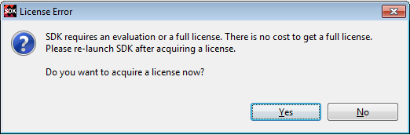

Beginning with the 2014.1 release, a license is required for running SDK.
When SDK is launched, it checks for a valid “SDK Feature” license. Two types of licenses are available:
If you do not have an SDK license, SDK displays the following error message and then exits. You must re-launch SDK again after obtaining a license.
